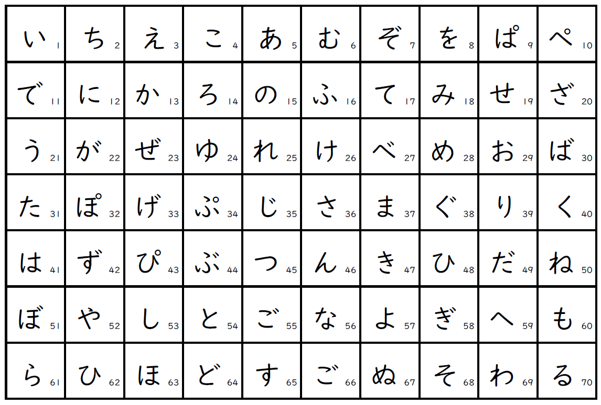
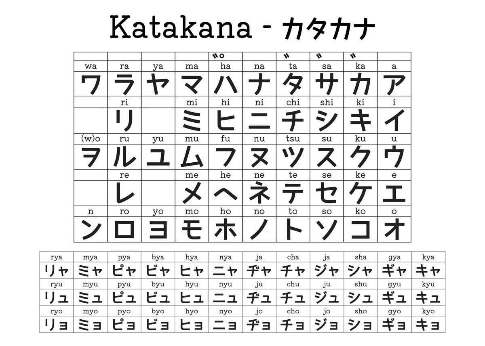

Here, we'll explore various aspects of the Japanese language, culture, and society. Whether you're a beginner or an advanced learner, there's something here for everyone.
In our blog posts, we'll cover topics such as grammar tips, vocabulary lessons, common phrases, cultural insights, and much more. Our goal is to provide you with valuable resources and practical advice to enhance your Japanese language learning journey.
Stay tuned for regular updates and engaging content that will help you deepen your understanding of Japanese language and culture. Let's embark on this exciting learning adventure together!
Hiragana Chart
About Hiragana:
Hiragana is one of the essential writing systems used in the Japanese language. It consists of 46 characters, each representing a distinct sound or syllable. Hiragana characters are derived from simplified forms of Kanji (Chinese characters) and are primarily used for native Japanese words, verb endings, grammatical particles,and various function words.
Katakana Chart
About Katakana:
Katakana is a Japanese script consisting of 46 characters, much like Hiragana. However, unlike Hiragana, which is primarily used for native Japanese words, Katakana is predominantly employed for foreign loanwords, onomatopoeic expressions, technical terms, and names of plants and animals.Its angular and simplified forms lend a distinct visual identity to written Japanese.